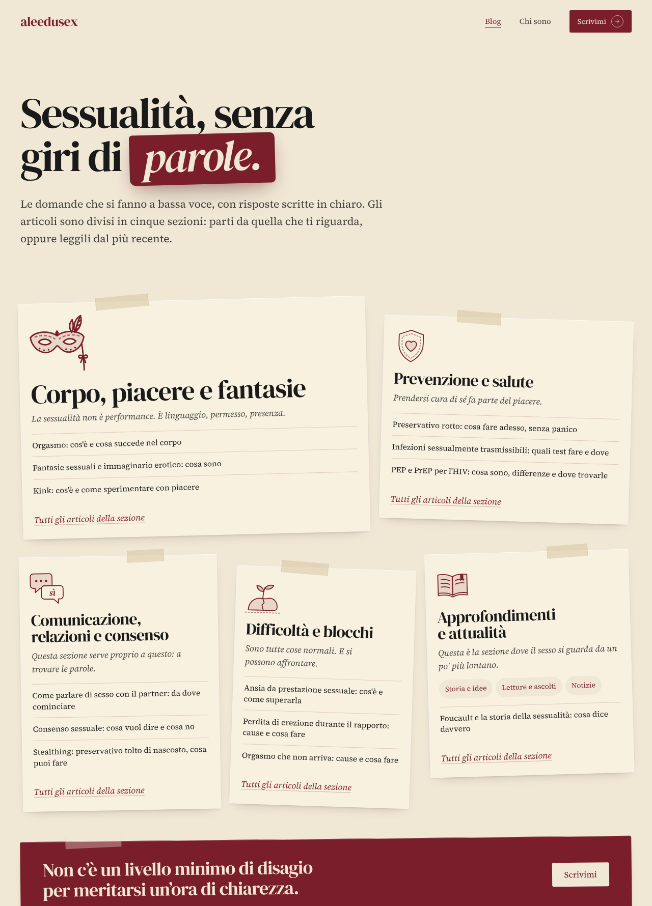
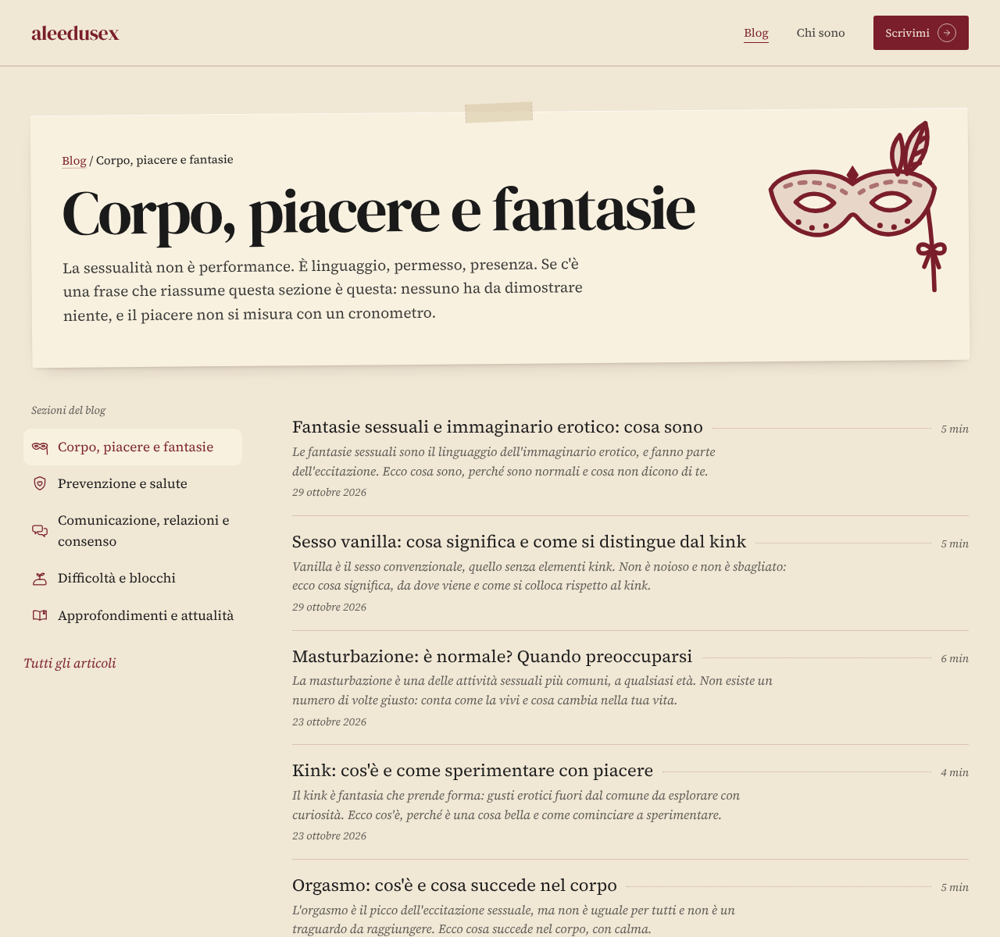
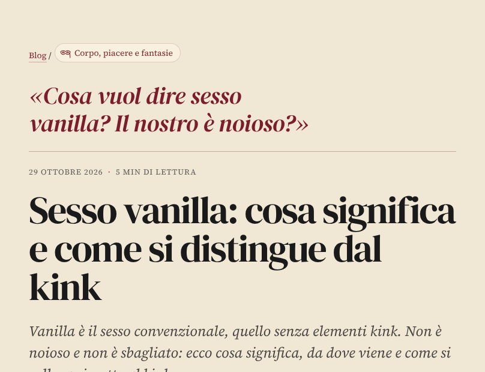
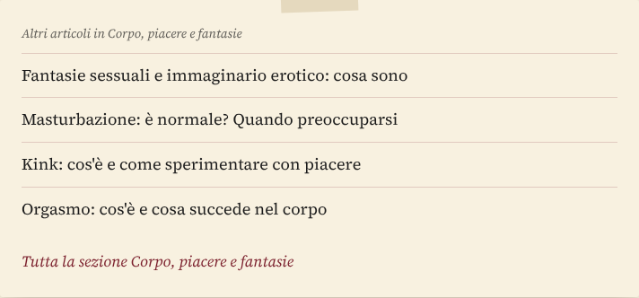
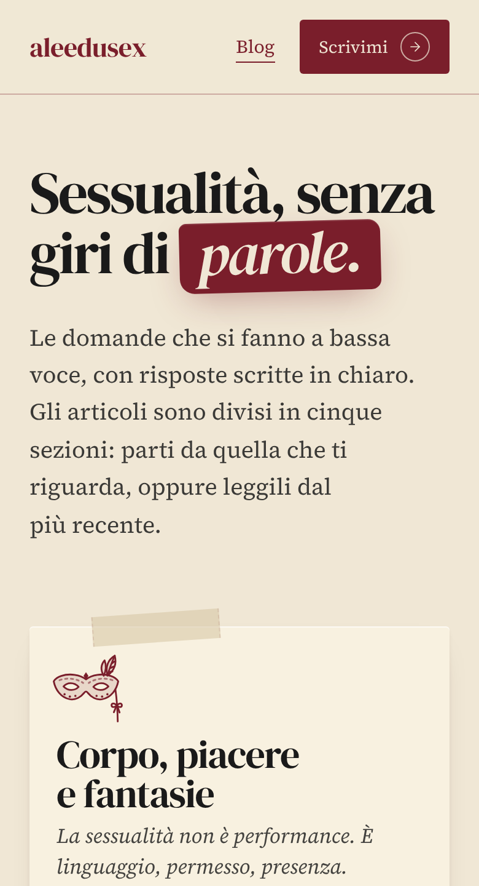
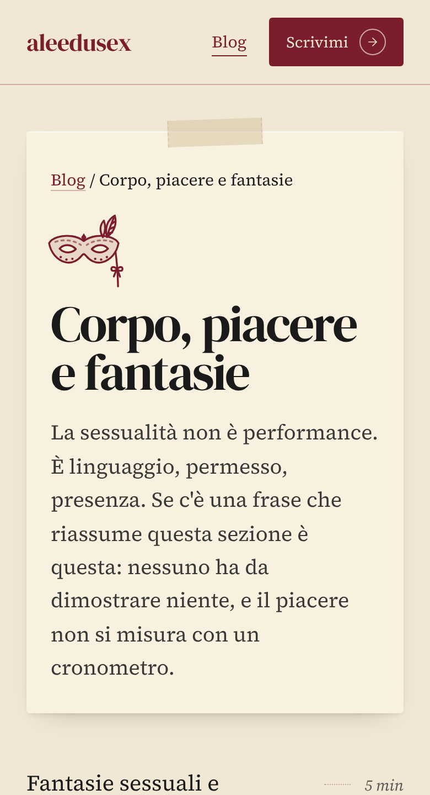
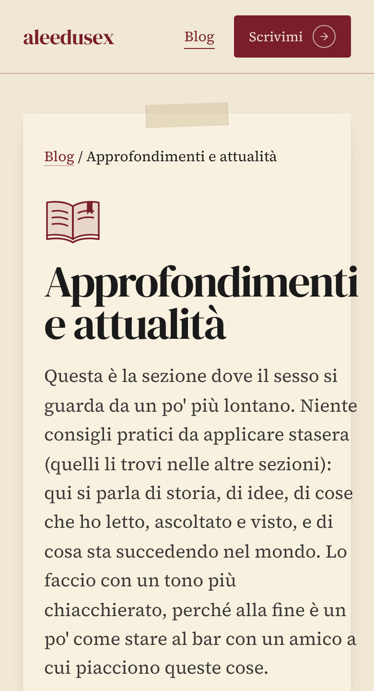
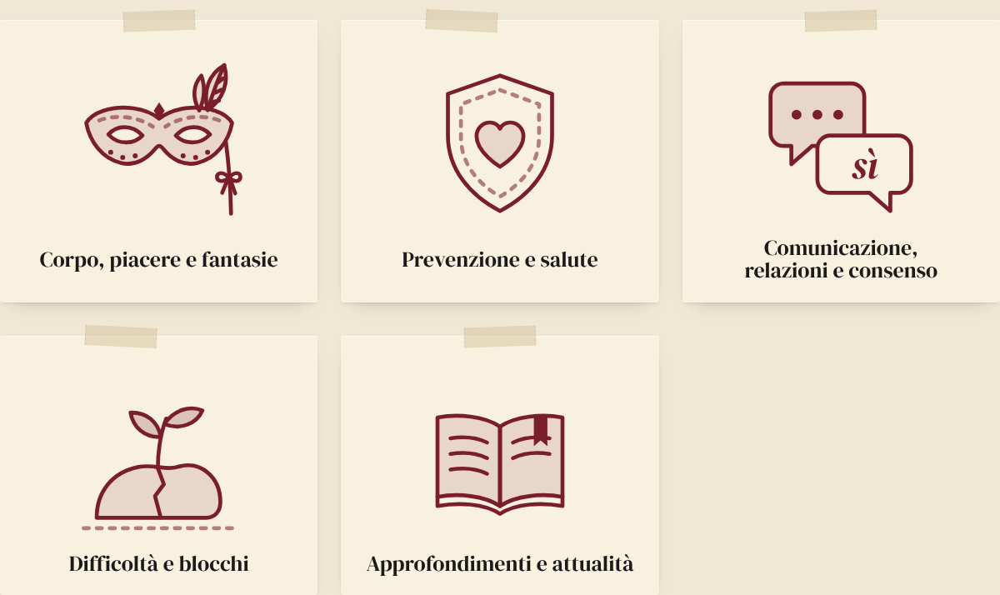

Nomi, ordine e testi sono i tuoi. Si apre con Corpo, piacere e fantasie; i riquadri sono pizzini attaccati, nei colori del sito.

In alto il primo paragrafo della tua introduzione, poi gli articoli; il resto del tuo testo segue sotto, così su Google la pagina ha le sue 300 parole.







È ancora una prova: online non è cambiato niente.